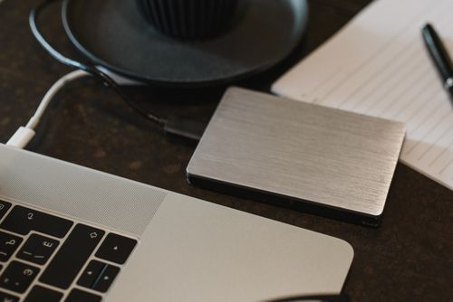

Data Recovery & Backup
I Deleted Important Files by Mistake — How Do I Recover Them?
Deleting does not erase the data — your speed decides success more than any software.

Your USB drive has 20 GB free, but a 5 GB file refuses to copy: "The file is too large for the destination file system." The error is honest — free space is not the problem. The drive's file system is: FAT32, the default format on most USB drives for maximum compatibility, cannot hold any single file larger than 4 GB. It does not matter how much empty space sits next to it.
exFAT works on Windows, Mac and modern phones, and has no practical file-size limit.
If the drive must stay FAT32 (some old TVs, car stereos and set-top boxes only read FAT32), split the file instead: right-click it in 7-Zip → "Add to archive" → set "Split to volumes" to 4000M. The file travels as parts you re-join on the other computer with the same tool.
NTFS also handles big files, but Macs and many TVs read it poorly or not at all. For a drive that moves between devices, exFAT is the safer choice.
The 'file too large' error means the drive is FAT32 formatted, which caps single files at 4GB. Copy the data off, format the drive as exFAT, and copy back - exFAT handles huge files and works on Windows and Mac both.
Deleting does not erase the data — your speed decides success more than any software.
The 3-2-1 backup rule in plain English — phone and PC — so the next crash is an inconvenience, not a disaster.
Your phone's gallery is your life's photo album, and it lives on a device that can be lost, stolen, dropped in water, or simply fail.